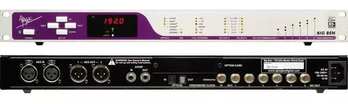

Photo via Hosa Technology.
A guide to recording in our studio. The first half walks the studio's gear and how it's all wired together (live room, control room, the path each signal takes from a mic on a stand to a track in Pro Tools). The second half pretends we're recording The Sound Below from front to back, with hands on the actual console.
The studio is two rooms with a window between them.
The live room (where you are right now if you walked in from the hallway) is where the band plays. It has mic stands, instrument amps when the band brings them, and a rack against one wall holding most of the gear that gets the band's signals out of the room.
The control room (on the other side of the window) is where the engineer sits. The Toft ATB lives here, on a console desk with a side rack tucked into one end. Pro Tools runs on a Mac Pro next to the desk. Speakers on stands behind the console face the engineer's listening position. Headphones for control-room work hang on the wall.
The two rooms are connected by a wall full of XLR jacks and an audio path that runs in both directions: live signals come from the live room into the control room (mic → preamp → console → DAW), and a mix comes back the other way so performers in the live room can hear themselves and each other in headphones while they record. Everything in this handout sits somewhere on that two-way path.
The rack against the live-room wall holds five things, top to bottom in the order signal travels through them.
Two of these panels live in the rack, stacked. Each panel is a row of twelve XLR female jacks numbered 1 through 12. Plug a microphone (or a DI box's output) into one of these jacks and you're feeding a preamp downstream. The first eight jacks on the top panel correspond to channels 1 through 8 on the first preamp; the first eight jacks on the bottom panel correspond to channels 1 through 8 on the second preamp.
The panels exist because plugging mics directly into the back of a preamp is impractical when the preamp lives in a rack tucked against the wall. The panel brings the eight inputs forward in a tidy row at standing height, and a fixed XLR cable runs from the back of each panel jack to the corresponding mic input on the preamp inside the same rack.

A preamp takes a mic-level signal (small, fragile, from a microphone) and lifts it to line level (large, robust, ready to be sent down the next stage of the chain). You met one preamp already, the one inside the audio interface at every lab station; this is the same job, done by a dedicated piece of gear with eight independent channels.
Our studio uses two such preamps stacked in the live-room rack. The Focusrite ISA 828 MkII is the top unit. Each channel has its own gain knob, impedance selector (the "Z in" toggle), 80 Hz HPF, phase invert, and +48V phantom power switch. The 80 Hz HPF and phase invert do the same things they do on the Toft (you met them in Lecture 3); the gain knob does what you've been doing in Audacity since Module 2.

Below the ISA sits the Focusrite OctoPre Platinum, another eight-channel preamp with the same job and a slightly different sound. Its controls are arranged differently (the channels are split into two rows of four) but each strip carries the same essentials: gain, +48V, phase, HPF. Sixteen preamp channels total between the two units.
The line-level outputs of both preamps don't stay in the live room. They travel through the wall to the control room, where they land on the back of the Toft ATB.

Performers in the live room wear headphones during tracking so they can hear a mix while playing; the engineer in the control room needs to be able to send them that mix. The Rane MH4 is a four-channel headphone amplifier in the live-room rack. A single stereo cue mix comes from the control room into the back of the MH4, and four independent headphone outputs (with per-output level knobs) leave the front to drum-fill, vocal booth, or wherever a performer happens to be standing.
Four players can be on independent headphone-level knobs from one stereo source. The source itself, the actual mix they're hearing, gets built back in the control room.
The last thing in the rack is the Furman PL-8 Series 2, a power conditioner. Every piece of gear in the rack plugs into the back of the Furman; the Furman plugs into one wall outlet. The conditioner filters out electrical noise on the power line, protects everything plugged into it from surges, and gives the engineer a single power switch that turns the whole rack on or off.
The Toft sits on a console desk that has a side rack built into one end. Five pieces of gear live in it, in roughly the order they show up in the signal path.

Every digital audio device runs on a clock: a steady stream of timing pulses that tells the device when to capture each sample. If two digital devices in the same studio are running on slightly different clocks, the small drift between them produces clicks, dropouts, and slow phase smearing. The fix is to use one device as the master clock and route its timing to every other digital device in the studio, so they all run on the same beat.
The Apogee Big Ben is our master clock. It generates a precise word-clock signal at the studio's chosen sample rate (44.1, 48, 88.2, 96, 176.4, or 192 kHz; we work at 48 kHz for Module 4 sessions) and distributes that signal over BNC cables through the wall to every digital device in both rooms. The Avid HDX in the side rack receives the clock; any other digital gear in the studio receives the clock; everyone agrees on the moment when each sample begins.

The Avid HDX I/O is the audio interface that connects the Toft to Pro Tools. It's a 16-in / 16-out converter (16 analog inputs that become digital tracks Pro Tools can record; 16 analog outputs that turn Pro Tools tracks back into analog audio for the console to receive). It connects to the Mac Pro by a single proprietary cable to the HDX PCIe card installed in the computer, which gives Pro Tools many more simultaneous tracks than a USB or Thunderbolt interface could carry.
The HDX is the device that the master clock matters for most: every sample Pro Tools captures or plays back gets its timing from the Big Ben signal arriving at the HDX's BNC word-clock input.
A stereo bus compressor, used for gentle level-evening of a stereo mix. Lives in the side rack so the engineer can patch it into the master mix path (via the master section's INSERT loop) when a mix is approaching final and needs a unifying glue.
This is one of the most-loved studio compressors in the world; we'll come back to what it does in Module 4. For now, just know it's in the rack and waiting.
A studio reverb and delay processor. Mono in, stereo out. Wired to one of the Toft's stereo effects returns so the engineer can send any channel a reverb tail via an aux send and hear the tail come back as part of the mix. Same aux-send-as-effect-tap mechanism you read about in Lecture 3.
Same model as the live-room rack's. One switch turns the whole side rack on.
With the gear in place, the path of a single mic signal from the live room to a Pro Tools track and back to the band's headphones runs like this. Imagine a vocalist standing in the live room with an SM58 in hand.
Step by step:
Look at the back of the Toft, channels 1 through 8. The XLR jacks have cables in them (the line outputs from the ISA). The LINE jacks right next to them are empty. This is on purpose.
The Toft's submaster monitor returns (where Pro Tools playback lands) are wired in parallel to the LINE jacks of channels 1 through 8. Plugging anything into a LINE jack on those channels would inject that signal directly into the submaster monitor path and collide with the Pro Tools return. Leaving them empty keeps the Pro Tools playback path clean.
Channels 9 through 16 are a different story; we'll come back to what's on their LINE jacks when we use them.
Same band, same twelve signals, same console, very different goal. The band is now in a studio's live room; the engineer is in the control room behind the glass; the audience is gone. The output isn't a real-time mix for someone listening tonight. It's a multitrack recording: each instrument captured on its own track in Pro Tools, to be edited and mixed later in front of the screen, days or weeks after the band has gone home.
The reality of studio work, almost everywhere, is that the band does not play together all at once. Studio recording proceeds by tracking: one source or one section at a time, layering the recording in passes. The typical order is rhythm section first (drums, then bass), then the harmonic and rhythmic layers (guitar, then keys), and finally vocals on top. The drummer plays to a click track in headphones; the bassist plays to the drum recording; the guitarist plays to drums and bass; the keyboardist plays to drums and bass and guitar; the vocalist sings to the full instrumental band. Each player performs in dialogue with whatever was captured on the previous days. By the end, the band has made an arrangement together that they never played together in the room.
The reasons are practical and artistic. Practically: isolating one source at a time means no bleed (a kick mic picks up only the kick, not also the bassist's amp through the open door). Artistically: the band can take many takes of each part without anyone else getting tired, edit between takes, fix what doesn't work, and use the studio as a composition tool. The studio session is less like a performance and more like a slow, patient assembly.
This re-shapes everything about how the console gets used. The master mix is now what the engineer monitors in the control-room speakers (the speaker output of the master section feeds them, so the engineer hears whatever's being captured plus whatever's playing back from Pro Tools). Each tracking pass only uses the channels for the source being recorded that day; the rest of the channels carry previous days' takes coming back from Pro Tools. The monitor-mix-per-performer picture from Scenario 1 collapses to a single cue mix for whoever is in the live room. And the I/P REV button, instead of being a once-at-the-end move, becomes part of the daily routine.
Studios solve the source-to-console problem differently from live venues, because a studio is built for repeated use across many different sessions and needs more flexibility than a touring band's stage box. Our studio (MB2508) actually has two parallel chains from the live room to the Toft: one for the mic-level sources (vocals, guitar amp, bass, drums) and a shorter one for the keyboardist's line-level sources. The mic-level chain is walked first, in four stages.
In Monday's reading, the channel strip's INPUT GAIN knob was the place where the preamp lived: a red knob at the top of each strip, setting how much amplification the mic-level signal received before passing through the rest of the channel. That description fits any console where the preamp is on board.
In our studio, the preamp has been moved outside the console. The ISA 828 and the Octopre do the mic-level-to-line-level boost before the signal ever reaches the Toft. By the time a channel sees the signal, the gain has already been set on the external preamp's front panel; the Toft's INPUT GAIN knob becomes a secondary trim (typically left at unity, or used for fine adjustment), and the LINE button at the top of the strip is engaged so the channel listens to the LINE jack on the back instead of the MIC jack.
Why bother moving the preamp out? Two reasons. The first is sound: external preamps like the ISA 828 are designed and built to a higher specification than the preamps inside a project-studio console; they impart a particular character that's part of the studio's sonic signature. The second is flexibility: with the preamp separate from the console, the engineer can choose a different preamp per source per session (one preamp for vocals, another for drums, a third borrowed from a friend just for this take), without being locked into whatever the console happened to ship with.
The two preamps in MB2508 don't sound the same. The Focusrite ISA 828 ("the good one") is a transformer-coupled design, clean and detailed, with a warmth on transient material that engineers reach for on lead vocals and intimate sources. The Octopre Platinum ("the cheaper one") is solid-state, more workmanlike, perfectly usable on louder sources where the preamp's character is less audible against the source's own loudness.
Because the patch panel's odd jacks are hard-wired to the ISA and the even jacks are hard-wired to the Octopre, which jack you plug a mic into is a decision about how that mic will sound on the recording. The engineer doesn't have a "preamp select" switch; the choice gets made by which jack the cable goes into. The conventional move is to send the most exposed, most-listened-to sources through the ISA (vocals first, then stereo pairs, then any solo instrument the song depends on) and route the loud workhorse sources through the Octopre (kick drum, guitar amp, anything in a busy mix).
On a tracking day, the engineer has eight patch panel jacks to allocate. With only four mics active (drums), or two (bass DI + bass amp), or one (vocals), the eight jacks are more than enough. The constraint is real only when many mics need to be on at once, and even then the engineer can swap patches mid-session.
The chain above describes how the eight mic-level signals get from the live room to the Toft. The keyboardist's four signals don't follow it. They're line-level at the source, so they don't need the patch panel or the external preamps; sending them through that chain would just add unnecessary conversion stages and waste two preamp inputs on a signal that's already at the right level.
Instead, the keyboardist's outputs go to a small two-channel audio interface that lives in the control room, not in the live room. The two interface inputs accept her 1/4" TRS line-level signals directly; the interface's two analog outputs are wired into Toft channels 15 and 16 on the LINE jacks at the back of the console. From the Toft's point of view, two channels on the right end of the desk are reserved for the keyboardist, permanently fed from this interface.
Two interface inputs and four line-level sources looks like a mismatch, and it would be if the band were playing together. With the studio's tracking workflow it isn't: the keyboardist tracks her stage keyboard on one day and her laptop on another, never both at the same time. On keys day, her two keyboard outputs (L and R) cable into the interface; Pro Tools records two tracks (Ch 15 and Ch 16). On laptop day, those same two interface inputs receive the laptop's two outputs instead; Pro Tools records two more tracks (again Ch 15 and Ch 16, but a different take and a different source). Across the two days, four discrete tracks land in the session even though the chain has only two channels at any moment.
Across the full MB2508 setup, the band's twelve signals reach Pro Tools by two completely separate paths. The eight mic-level signals take the long path: patch panel in the live room, into the rack-mounted preamps, through the wall to the Toft's LINE inputs at channels 1 through 8 (the channel-to-source mapping shifting each tracking day with the preamp allocation). The keyboardist's four signals take the short path: straight to the interface in the control room, into the Toft's LINE inputs at channels 15 and 16 (permanently). The two chains never share a piece of gear past the source.
Why two chains? The mic-level signals need preamps (to lift them up to line-level) and benefit from being shaped by the external preamps' character; the line-level signals need neither. Forcing them all through the same chain would help nothing and would cost two preamp inputs per session on signals that don't want preamping. The studio uses the right tool for each kind of source.
The studio channel map is shaped by the two chains. Channels 1 through 8 carry the mic-level signals coming back from the rack, but which source lands on which channel is a per-session decision, made by which patch-panel jack the engineer plugs each mic into (which in turn decides which preamp it passes through). Channels 15 and 16 carry the keyboardist's stereo pair from the control-room interface, permanently. Channels 9 through 14 sit empty, and the MON returns on all twelve active channels carry Pro Tools playback for monitoring.
| Channel | Source | Rear-panel jack |
|---|---|---|
| Ch 1-8 | Mic-level sources, allocation set per tracking day by patch-panel jack (odds → ISA 828, evens → Octopre) | LINE (1/4" TRS, from preamps) |
| Ch 9-14 | Empty | – |
| Ch 15 | Keyboardist's L output (stage keyboard or laptop, depending on tracking day) | LINE (1/4" TRS, from control-room interface) |
| Ch 16 | Keyboardist's R output (stage keyboard or laptop, depending on tracking day) | LINE (1/4" TRS, from control-room interface) |
In Scenario 1 the channel map was fixed: Ch 1 always meant vocal, Ch 5 always meant kick, and so on. In the studio the mapping for Ch 1-8 is more fluid because each tracking day uses a different subset of the patch panel jacks, and the engineer chooses which patch panel jack each mic goes into based on which preamp the source should pass through. A snare mic patched into jack 3 (one of the ISA 828's inputs) ends up on a different Toft channel than the same snare mic patched into jack 4 (one of the Octopre's inputs). The Toft channel number is downstream of the patch panel decision.
On drums day, four mics fill four jacks; on bass day, two mics fill two; on vocal day, one mic fills one. The previous day's takes don't take up patch panel jacks at all (they play back from Pro Tools into the Toft's MON jacks, not the LINE jacks). Channels that aren't taking a fresh input that day are dedicated to monitoring the playback.
Channels 15 and 16 are the exception to the flexibility: they're permanently reserved for the two-channel interface that feeds the keyboardist's signals from the control room. On keys day, those two channels carry the stage keyboard; on laptop day, those same two channels carry the laptop. The interface stays cabled to the Toft the same way across both days; only what's plugged into the interface itself changes.
The last leg, common to both chains, is the Toft-to-interface connection that gets each channel onto its own track in Pro Tools. Each input channel on the console has a DIR. O/P jack on the back (Lecture 3, section 2): a tap of that channel's post-fader signal, sent straight out to a single destination independently of the routing buttons. The studio's audio interface has a row of inputs; each direct out feeds one of them. Pro Tools sees one input per channel of the Toft, and records each one as its own track.
The performers in the live room need to hear themselves and the previous tracks while they play. Since only one or two players are in the room on any given tracking day, the console only needs to build one or two cue mixes, not five. Aux 1 typically carries the cue mix for the day: a personalized blend of the previous days' recorded tracks (playing back through the MON returns), the click track, and the current day's live mic, all balanced to whatever level the player needs in their headphones.
The aux runs out of the console to a headphone amplifier in the live room, where it gets distributed to the player's headphones (and any spare headphones for additional players who happen to be in the room without recording, watching the takes). Aux 1 stays pre-fader: the engineer's level moves on the channel faders are for the control-room mix, not for what the player hears.
| Aux | Destination | Pre / Post | What's turned up on this aux |
|---|---|---|---|
| Aux 1 | Player's headphone cue (whoever is tracking today) | Pre | Previous-day tracks · click · live mic of the player in the room |
| Aux 2-6 | Free for additional cues, FX sends, or unused | – | Used as the session calls for them |
If two players are tracking together on the same day (a bassist and a drummer recording the rhythm section live, say), Aux 2 picks up the second cue mix. If the engineer wants a wet vocal in the singer's headphones to help with pitch and feel, Aux 3 becomes a reverb send. The other auxes stay available; the session uses what it needs.
A click track is a metronome the players hear in their headphones while they record. Each beat is a short click sound at the song's tempo; the players follow it so the recording lands on a steady tempo grid. The drummer is the first one to hear it (drums are usually tracked first, and the click sets the tempo for every layer that follows). Once the drum takes are committed, the click can stay in the headphone mix or drop out; many engineers keep it in for the rest of tracking so every layer locks to the exact same grid.
The click usually lives on its own track in Pro Tools that gets fed back into the console via a spare MON input or a tape return; from there it gets sent into the cue mix on Aux 1.
While someone is tracking, the engineer is in the control room listening through the studio monitors. The master section's speaker output feeds those monitors (see Lecture 3, section 5), so whatever the console is summing into the master mix arrives in the engineer's room in real time. The engineer adjusts faders, EQ, and pans for the day's session: the live mic of whoever's playing, plus the previous days' tracks coming back from Pro Tools, all balanced for the engineer's own ears. None of this affects what gets recorded: Pro Tools captures the day's live channels via their direct outs independently of how the engineer sets the channel-strip fader or EQ. The control-room mix during tracking is the engineer's monitoring reference, not the recording itself; the real mix happens later, with the entire band's tracks committed.
From day 2 of tracking onward, the engineer has a problem the live show never has. The bassist is in the live room playing along with the drum tracks from day 1. The drum tracks are coming back from Pro Tools into the Toft's MON jacks (one DAW output per drum mic, into the corresponding channel's MON jack on the back). On each strip, the MON input flows through the monitor section in the middle, lands in the master mix, and reaches the engineer's speakers via the speaker output: enough to hear the drum playback alongside whatever new source is being recorded. What the monitor section doesn't reach is the channel EQ or the big fader. If the engineer wants to EQ the kick down a few dB so the bassist can hear his own low end better, the monitor section can't do it; the EQ lives on the channel path.
The fix is the I/P REV button at the top of each input strip. When the engineer presses I/P REV on a channel, the two paths swap: the signal coming in through MON (the DAW playback) now flows through the big channel fader with the full EQ and aux-send chain, and whatever was at the MIC or LINE input flows down the smaller monitor path. On every channel that's playing back a previous take during today's session, I/P REV gets pressed; the playback now sits on the big faders, fully shapeable. The channels for whatever new sources are being tracked today stay with I/P REV off, so the live mics still flow normally through the channel path on their way to Pro Tools.
The same move is also what the engineer uses at mixdown, after all tracking is done. With the live mics gone home, every channel that was carrying a fresh input now becomes a playback-only channel; I/P REV gets pressed across the board, and the full multitrack sits on the big faders for mixing. The button isn't a mixdown-only feature; it's the in-line console's way of letting any channel carry either a fresh input or a recorded playback, on a strip-by-strip basis, switchable at any moment.
The diagram below shows the swap as a comparison between two states of a single channel strip: I/P REV off (the channel path is alive, the monitor path carries DAW playback through the small knob) and I/P REV on (the paths trade places, and DAW playback gets the big fader). It applies equally to a tracking day's playback channel and to a mixdown-day channel.
On a non-in-line console (called a split design), the channels and the monitor returns live on entirely separate sets of strips, and a tracking session means the engineer is constantly looking back and forth between two sets of faders: one for the live mics, another for the playback. On an in-line console, the channel and its monitor return share the same strip, and the I/P REV button is the swap-over per strip. Today's live channels stay one way; yesterday's playback channels flip the other way; both are right under the engineer's hand on the same row of faders. When tracking is done and mixing begins, every strip flips together and the same row of faders becomes the mix surface. The mixing fingers stay on the same strip across the entire arc of the recording.
The stage box and the studio rack solve the same problem from different angles. The stage box is built for a band that arrives, sets up, plays, and leaves; everything (including the keyboardist's DI'd line-level signals) is patched once for the night, then the snake is wound down and the rig moves on. The studio's mic-level chain is built for endless reuse across years of sessions: the rack, the XLR patch panel, the two preamps, and the eight cables running through the wall all stay fixed; what changes from session to session is which mics get plugged in and to which jacks. The keyboardist's signals take a separate, parallel path entirely (interface in the control room, into Ch 15-16), reflecting that they don't need preamps and shouldn't take up preamp inputs they don't benefit from. One scenario answers "how do we move many signals through a building for one evening." The other answers "how do we run a recording room that supports a thousand sessions over a decade, with the right tool for each kind of source."
Now look at what stayed the same and what moved across the two scenarios on the same desk.
| Console feature | Scenario 1 (live) | Scenario 2 (studio) |
|---|---|---|
| Sources active at once | All twelve, all the time, all night | One source or section at a time, across many tracking days |
| Source-to-console chain · mic-level sources | Stage box on stage → snake → console at FOH | Studio rack in live room (XLR patch panel + two external preamps mounted together) → through-wall line cables → Toft LINE inputs at Ch 1-8 |
| Source-to-console chain · keyboardist's line-level sources | Keys/laptop → DI box at stage → mic-level XLR into snake → console at FOH | Keys/laptop → two-channel interface in control room → Toft LINE inputs at Ch 15-16 |
| Mic preamp (for mic-level sources) | On-board on each channel strip (INPUT GAIN, MIC jack) | External (ISA 828 or Octopre); on-board preamp bypassed (LINE jack) |
| Subgroups 1-2 · drum bus | Drum bus into the master mix via submaster MON LEVEL (submaster fader unused, no DAW) | Drum bus into the engineer's control-room mix on drums day (submaster fader can also feed Pro Tools as a recorded drum bus) |
| Subgroups 3-4 · electronic bus | Keys + laptop bus into the master mix via submaster MON LEVEL (four channels into one stereo pair) | Not used (keys and laptop track separately, each filling only Ch 15-16) |
| Master mix → MASTER O/P | To the FOH amps, driving the audience speakers | To a 2-track recorder or stereo capture, for the final mixdown |
| Speaker output | Unused (engineer listens to the FOH or wears headphones) | Drives the control-room speakers, so the engineer hears the master mix while tracking and mixing |
| Aux sends (pre-fader) | Five stage monitors (one per performer, Aux 1-5) | One headphone cue for whoever is tracking today (Aux 1) |
| Aux sends (post-fader) | Aux 6 spare (no outboard FX in tonight's setup) | Free for outboard FX or additional cues (Aux 2-6) |
| Direct outs | Typically unused | One per active channel to the audio interface, into Pro Tools |
| MON inputs + I/P REV | Unused (no DAW playback during a live show) | DAW playback comes back here; I/P REV flips previous-day tracks onto the big faders during tracking, then flips everything at mixdown |
The two scenarios run on different clocks. The live show is real-time and simultaneous: twelve signals into the console at the same moment, two output mixes built and ridden in parallel, all of it finished by the end of the night. The studio is iterative and layered: one or two signals into the console at a time, captured to disk, then revisited across days as the next layer plays along with the previous. The shape of the engineer's work is the same in both cases: take signals in, shape each one with the channel-strip controls, build whichever mixes the situation calls for, send the result somewhere. The hardware is identical. The patching, the destination of every output, and the pacing change between contexts.
The same observation extends past these two scenarios. A film mixing stage, a broadcast truck, a live-streamed church service, an album-mixing session, a podcast studio: the console at the center is doing the same operations. Channels, EQ, fader, pan, routing to a subgroup or a master, aux sends to wherever the situation needs parallel mixes. Once the underlying operations make sense, every new context is a re-patching exercise rather than a re-learning exercise.
~/Documents/lastname/sample-library/, check that any sounds you recorded this week are tagged, and confirm the running README still reflects what's in the folders. If there are sounds you haven't prepped yet, this is a good moment to do one or two more passes through the denoise → trim → normalize pipeline.Then continue with the rest of the card's end-of-session routine: eject the NAS, sign out of browser accounts, quit all apps, chair in.